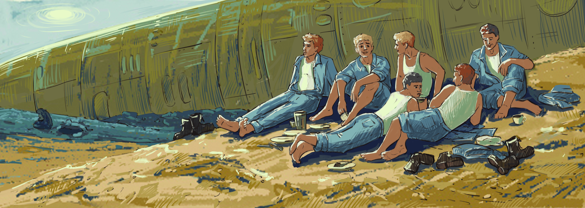
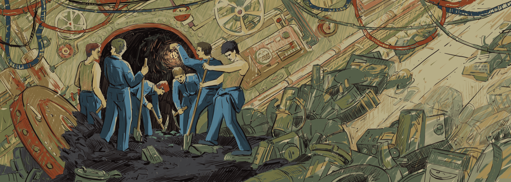

Eden
Costume sketches for a closed garden: ritual, fruit, and the moment before the fall.
| Title | «Эдем» — научно-фантастический роман Станислава Лема (1958) |
|---|---|
| Year | 1958 |
| Field | Costume / stage |
| Description | Экипаж из шести землян терпит крушение на неизученной планете Эдем. Пытаясь починить корабль, они исследуют чужой мир и сталкиваются с высокоразвитой цивилизацией двутелов. |

 1.jpg 1.jpg |  2.jpg 2.jpg |
 3.jpg 3.jpg |  4.jpg 4.jpg |
 5.jpg |  6.jpg |